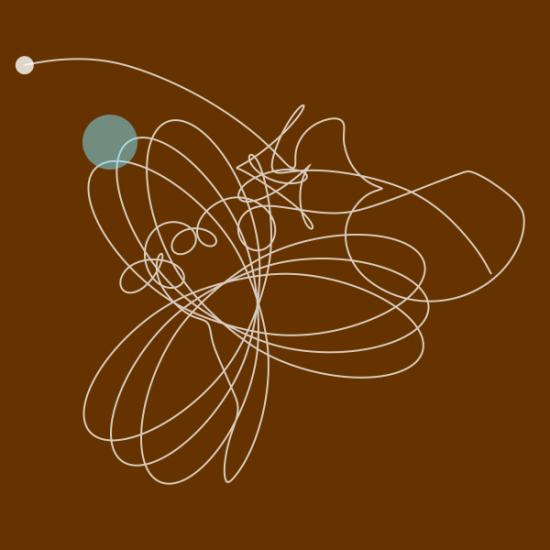

Very nice work, Giorgio, as usual. You certainly know how to move the earth! (btw I keep on getting very good comments about your presentation at integrated2009 especially from the fine arts department, you opened their eyes (minds?)...)
thanks lucas.
after some ping-pong coding in the studio, here's an updated version of the above sketch.
user manual:
— hit '+' to add a satellite
— hit 'p' to hide or show the satellites
PS
HOW DO I POST AN IMAGE IN A COMMENT?
from math import * size(630, 780) speed(60) def setup(): global earth, d, moons, keypressed earth = MousePlanet(mass=30.0) moons = [] d = True keypressed = '' def draw(): background(0.4,0.2,0) global d,keypressed # to do: check se il mouse va offstsage earth.update() for m in moons: g = gravity(earth, m, k=200) m.update(g) nofill() strokewidth(2) autoclosepath(False) if keydown: keypressed = key if not keydown and keypressed: if key == 'p': d = not d elif key == '+': moons.append(Planet(x=random(0, WIDTH), y=random(0, HEIGHT), mass=random(5,25))) keypressed = '' if d: for m in moons: m.showpath() earth.draw() for m in moons: m.draw() class Planet: def __init__(self, x, y, mass=1.0): self.x = x self.y = y self.mass = mass self.s = self.mass*1 # size self.r = self.s*0.5 # radius self.alive = True self.v_x = 0 self.v_y = 0 self.path = [] def draw(self): self.path.append(Point(self.x, self.y)) fill(1, 0.8) nostroke() oval(self.x-self.r, self.y-self.r, self.s, self.s) def showpath(self): if len(self.path) > 0: stroke(1, 0.75) first = True for pt in self.path[-20:]: if first: beginpath(pt.x, pt.y) first = False else: lineto(pt.x, pt.y) endpath() def update(self, g): a_x = g[0] / self.mass # acceleration a_y = g[1] / self.mass self.v_x += a_x self.v_y += a_y self.x += self.v_x self.y += self.v_y class MousePlanet: def __init__(self, mass=1.0): self.x = MOUSEX self.y = MOUSEY self.mass = mass self.s = self.mass*2 self.r = self.s*0.5 self.alive = True def draw(self): fill(0.5, 0.9, 1, 0.5) nostroke() oval(self.x-self.r, self.y-self.r, self.s, self.s) def update(self): self.x = MOUSEX self.y = MOUSEY def gravity(obj1, obj2, k=0.5): dist = distance(obj1.x, obj1.y, obj2.x, obj2.y) limit = max(obj1.s, obj2.s) if dist < limit: dist = limit grav = ( (obj1.mass * obj2.mass) / (dist * dist) ) * k grav_x = grav * ( (obj1.x - obj2.x) / dist ) grav_y = grav * ( (obj1.y - obj2.y) / dist ) return (grav_x, grav_y) def distance(x0, y0, x1, y1): return sqrt((x1-x0)*(x1-x0) + (y1-y0)*(y1-y0))
This idea has been on my to-do list for a little while now! Thanks a lot for sharing, Giorgio! I don't think I'll get around to playing with this for a couple of weeks, but I'll post if I come up with anything interesting.
There is definitely so many things that you an do with this. The options are endless with this. The code is definitely so good. Toronto Mortgage

Gravitational drawing
Posted by Giorgio O. on Nov 11, 2009
Quick&dirty sketch using the Newton's law of universal gravitation in Nodebox.
http://en.wikipedia.org/wiki/Gravitational_force
Hit 'p'/'o' to show or hide the trailing path.
The 'earth' is not affected by the gravity since it has a rigid link to mousex and mousey.
ciaociao
G.